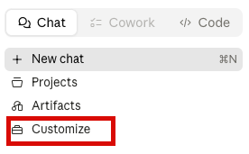
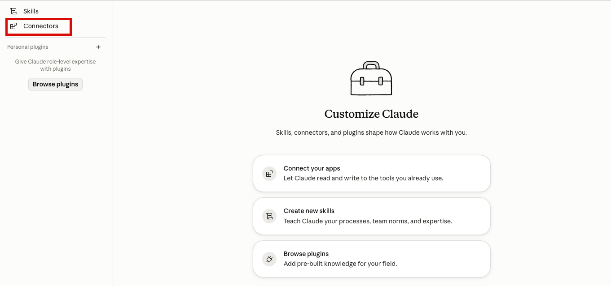
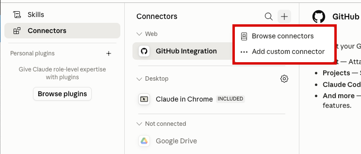
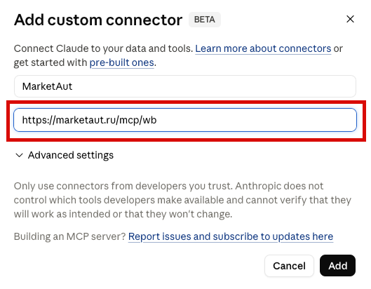
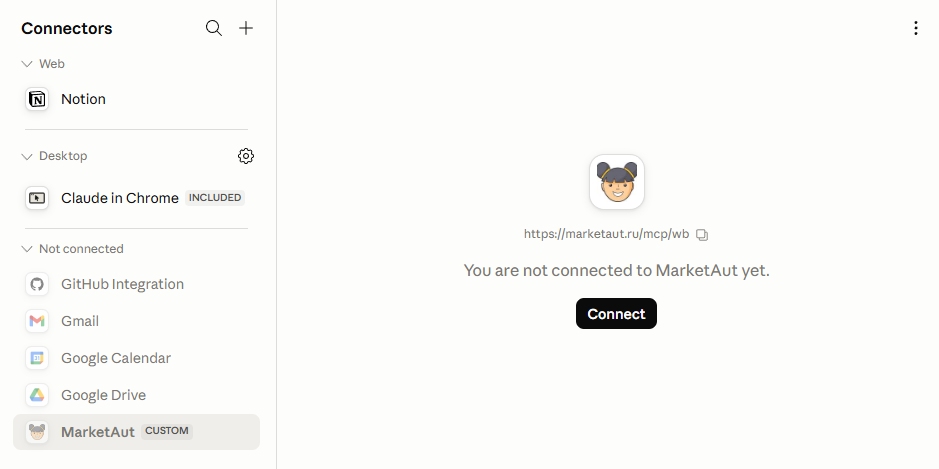
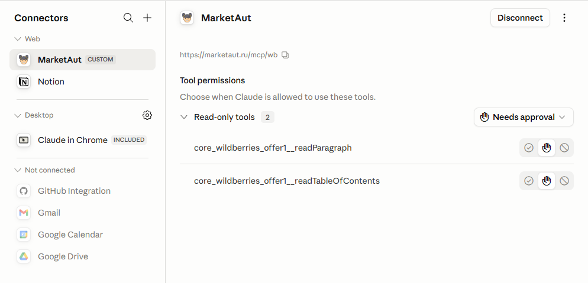
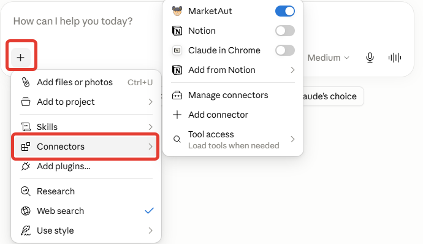
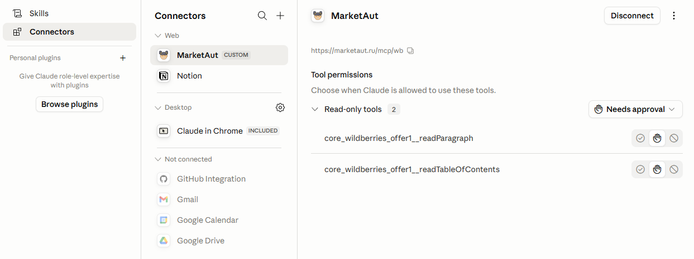
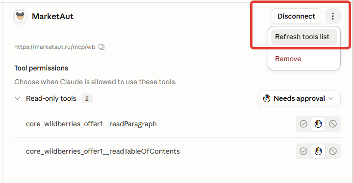
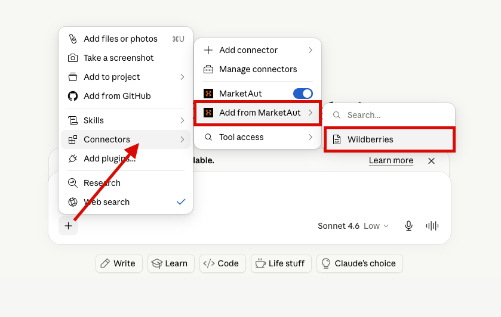

Общая информация
В этом разделе описано подключение Claude к платформе MarketAut.
Подключение выполняется через протокол MCP.
После подключения Claude сможет использовать инструменты и данные, доступные в вашей диаграмме MarketAut, напрямую из диалога.
В качестве примера используется Claude Desktop.
Подключение
- Запустите приложение Claude for Desktop;
- В разделе Chats выберите Customize;

- В открывшемся окне выберите Connectors;
Connectors — механизм подключения Claude к внешним системам. С его помощью Claude может получать доступ к инструментам и данным платформы MarketAut.

В разделе Connectors отображаются уже подключённые коннекторы и доступные подключения.
- Для подключения нового коннектора нажмите кнопку + и выберите Add custom connector;

Откроется окно настройки Connectors.
Заполните следующие поля:
- Имя — любое удобное название, например
MarketAut. - Адрес — MCP-адрес вашей диаграммы, полученный на домашней странице MarketAut.
Пример MCP-адреса:
https://marketaut.ru/mcp/wb
После заполнения полей нажмите Add.

После добавления коннектора MarketAut появится в списке подключений, но будет отображаться как неподключённый.
Для продолжения настройки нажмите Connect.

После нажатия кнопки Connect откроется страница авторизации MarketAut.
В окне предоставления доступа нажмите Разрешить доступ.
После успешной авторизации Claude получит доступ к инструментам и данным, доступным в вашей диаграмме MarketAut.
После завершения подключения статус коннектора изменится на «Подключён».

Работа с Claude
Проверка подключения
В любом диалоге Claude нажмите кнопку (+) рядом с полем ввода сообщения и выберите Connectors.
Если подключение настроено корректно, в списке коннекторов будет отображаться MarketAut (или другое имя, указанное при настройке подключения).

Обновление инструментов
После изменения списка инструментов в MarketAut необходимо обновить список инструментов в Claude.
Для этого перейдите в раздел Customize.
Далее откройте раздел Connectors.

Выберите нужный коннектор, нажмите на кнопку меню (⋯) в правом верхнем углу и выберите Refresh tools list.

Настройка доступа к инструментам
Для каждого инструмента можно отдельно настроить способ доступа.
Доступны следующие варианты:
- Полный запрет — Claude не сможет использовать инструмент;
- Подтверждение перед каждым использованием — перед вызовом ;инструмента потребуется подтверждение пользователя;
- Использование без подтверждения — Claude сможет использовать инструмент без дополнительных запросов.
Для настройки перейдите в раздел Customize и откройте коннектор MarketAut.
В правой части окна отображается список доступных инструментов. Для каждого инструмента можно выбрать один из режимов доступа:
В правой части окна отображается список доступных инструментов. Для каждого инструмента можно выбрать один из режимов доступа:

Значки режимов доступа:
- ✔ — использование без подтверждения
- ✋ — подтверждение перед использованием
- 🚫 — полный запрет
Добавление ресурсов через Add from MarketAut
Функция Add from MarketAut позволяет добавлять доступные ресурсы MarketAut в текущий диалог или проект Claude.
Использование этой функции не является обязательным для работы с платформой. При необходимости ресурсы можно добавить вручную в процессе работы.
Если в вашей диаграмме доступны ресурсы для добавления в Claude, в меню появится пункт Add from MarketAut.

После выбора ресурс будет добавлен в текущий диалог или проект.
Claude сможет использовать добавленные ресурсы при обработке запросов.
Важно
Пункт Add from MarketAut отображается только для ресурсов, поддерживающих добавление в Claude.
Чтобы добавить ресурс:
- Нажмите кнопку + рядом с полем ввода сообщения;
- Выберите Connectors;
- Откройте Add from MarketAut;
- Выберите нужный ресурс, например Wildberries.
После добавления ресурс станет доступен в текущем диалоге или проекте.